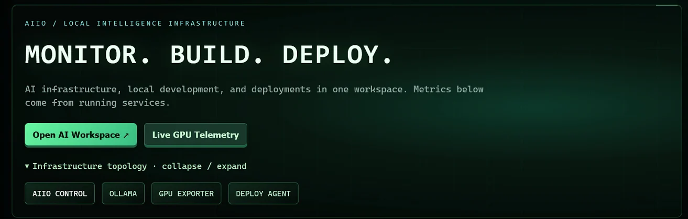
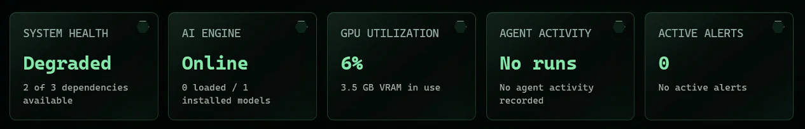
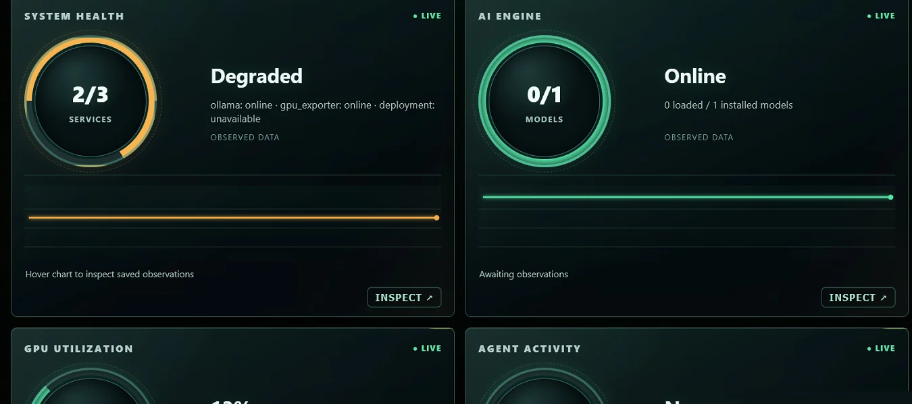
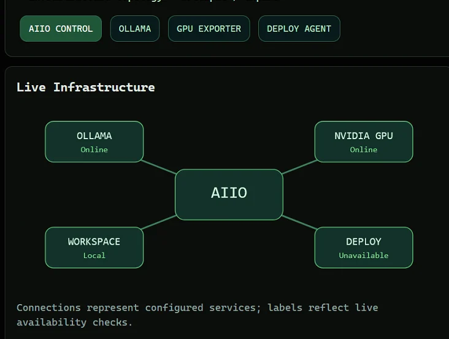
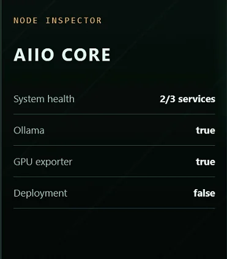
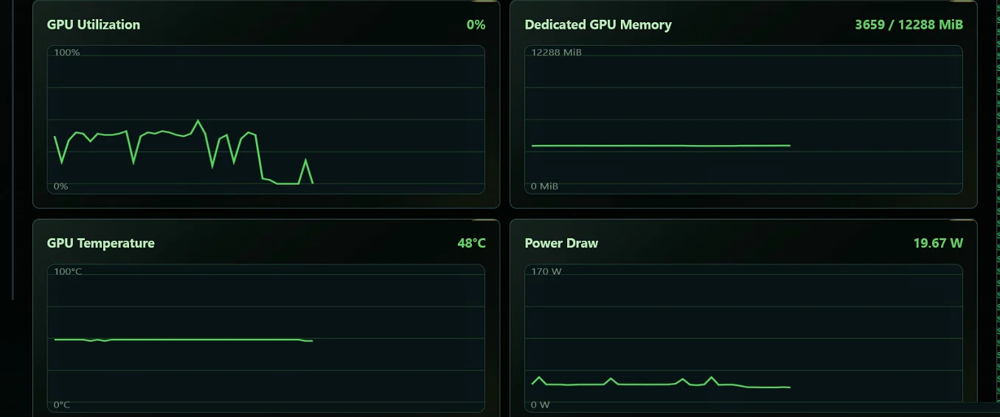
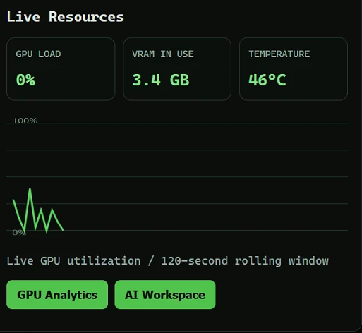
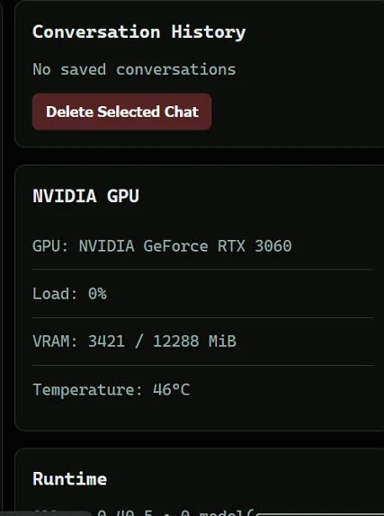
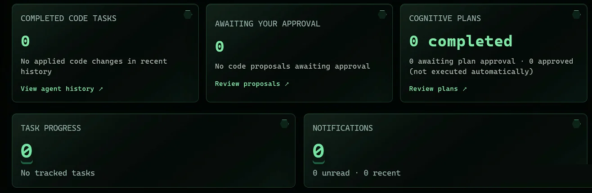

AIIO Station
A local AI workload moved from a CPU-only Linux server to a containerized platform on a GPU workstation, with its own control center.
- Type
- Local AI infrastructure
- Status
- Running in my lab; GPU inference not yet confirmed
- My role
- Creator and technical lead; AI-assisted development
- Stack
- Docker Compose, Ollama, SQLite
- Hardware
- NVIDIA RTX 3060, 12 GB
The Control Center

Live screenshots from the running platform. Metrics come from running services.
Project Overview
AIIO started as a way to make my self-hosted AI faster and more flexible. The original workload ran on a dedicated Debian 13 server using CPU-only inference through Ollama. It worked, but it was slow, and it tied up hardware I wanted for other infrastructure projects.
The goal was to move the workload to a Windows workstation with an NVIDIA GPU, containerize it, and turn it into a reusable local AI platform. Along the way it became an exercise in architecture, container orchestration, GPU resource management, persistent storage and validation.
Engineering Objectives
- Move from CPU-based to GPU-accelerated inference.
- Containerize the AI services for portability and maintenance.
- Keep models, configuration and application state across deployments.
- Build one interface for monitoring and managing local AI resources.
- Provide AI infrastructure for future projects, including MONITROPE.
The Migration
Before
- Dedicated Debian 13 server
- Ollama with CPU-only inference
- Models stored on that one machine
- Hardware tied up by a single workload
After
- Windows workstation with an NVIDIA RTX 3060 (12 GB)
- Docker Desktop with GPU-enabled containers
- Ollama plus the AIIO Control Center, in Docker Compose
- Persistent volumes for models and app data
- Authenticated host agent for Windows-side tasks
The old server was freed up and repurposed as an infrastructure virtualization host.
Architecture
Inference, management, host operations and storage are kept separate.
Engineering Challenges
GPU Visible Is Not GPU Used
A container can see the GPU while the model still runs on the CPU. I checked container runtime settings, GPU access, Ollama's behavior and how models loaded. An early
nvidia-smicheck inside the container failed only because the tool wasn't installed there, which proved nothing about passthrough.Lesson: prove GPU inference with workload behavior and telemetry, not by whether the GPU is detected.
Models That Survive a Rebuild
Model cache behavior made redeployments unpredictable. I reviewed volume mappings, how Ollama found previously downloaded models, and what happened when containers were recreated, then kept storage consistent across restarts and rebuilds.
Lesson: persistence is an architectural requirement, not an afterthought.
Host Control Without Host Access
Some tasks need the Windows host, but the app shouldn't have unrestricted access to it. I added a separate host agent the containers reach through Docker's host gateway, with token authentication and firewall restrictions.
Lesson: put privileged operations behind a narrow, authenticated interface.
Deployments That Repeat
Docker Compose runs the services with a dedicated GPU profile and a fixed project name, so containers, networks and volumes line up the same way every time.
Lesson: repeatable deployments come from consistent naming, storage and verification.
Inside the Control Center
The platform grew into a local AI management interface: an Ollama chat interface with saved history, model management, NVIDIA GPU telemetry, a coding workspace, container service management and host-agent integration. It treats local AI as managed infrastructure rather than a command-line tool.
















Validation
| Component | Recorded state |
|---|---|
| Ollama | Running with GPU |
| NVIDIA GPU | Active |
| Application containers | Healthy |
| Persistent storage | Mounted |
| Control Center | Integrated into the deployment |
These records show a validated deployment, not long-term availability. No before-and-after inference benchmarks are claimed.
AI-Assisted Code, Human-Directed Engineering
I used AI assistance to write much of the application. The engineering decisions, testing and accountability stayed with me.
| AI-assisted implementation | My engineering responsibility |
|---|---|
| Application code and interface generation | Requirements, workflow design, review and acceptance criteria |
| Implementation suggestions and code revisions | Weighing trade-offs, testing behavior and directing corrections |
| Scripts and diagnostic suggestions | Configuring infrastructure, investigating errors and validating fixes |
| Documentation drafts | Explaining decisions, recording evidence and protecting sensitive details |
Lessons Learned
Getting an application to start is not the same as proving the infrastructure works.
- A running container doesn't guarantee GPU acceleration.
- A detected GPU doesn't guarantee inference is using it.
- A successful deployment doesn't guarantee persistent storage.
- A healthy service doesn't mean the whole workflow works.
Each layer needs its own validation.
Successful infrastructure engineering isn't simply making something run. It's understanding why it works, proving that it works, and making it repeatable.
What’s Next
- AI-assisted coding and debugging, and local development agents.
- Integration with MONITROPE, including conversational questions about monitored networks.
- Infrastructure data analysis and wider automation.
These are development goals, not completed integrations.
Skills Used
- Docker Desktop
- Docker Compose
- Persistent volumes
- Ollama
- GPU-backed inference
- Windows and Linux integration
- Migration planning
- Runtime diagnostics
- Authenticated host APIs
- Firewall restrictions
- SQLite
- Deployment documentation
Documentation
- ArchitectureThe before-and-after migration and service layout above.
- Troubleshooting recordThe four engineering challenges, with what was checked and what was learned.
- Validation recordThe recorded component states above.
- ScreenshotsEight live views of the Control Center; select any image for full size.
- Field journalFrom CPU Inference to Production
- What is not shownHostnames, addresses, ports, tokens, project names and source code.
Sanitized for public use. No real addresses, hostnames, credentials or private repository details are shown. Where a feature is still being validated, it is marked as such.